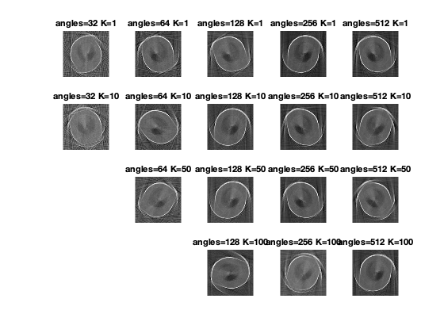
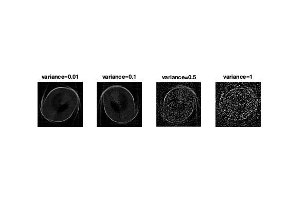

Contents
SLLE implementation
clc;clear all;close all ;
rng(0,'twister')
h = 256 ;
w=h;
img = phantom (h,w) ;
out = {} ;
K = [1,10,50,100] ;
num_angles = [32,64,128,256,512] ;
Testing with different number of angles and nearest neighbours.
for k=1:size(K,2)
for ang = 1:size(num_angles,2)
if num_angles(ang) < K(k) ; continue ; end
out{end+1} = run_sLLE(img,num_angles(ang),K(k));
end
end
figure;
i=1;
j=1;
for k=1:size(K,2)
for ang = 1:size(num_angles,2)
if num_angles(ang) < K(k) ; i=i+1; continue ; end
subplot(4,5,i);
imshow(out{j},[]) ; title(['angles=',num2str(num_angles(ang)),' K=',num2str(K(k))]);
j=j+1;
i=i+1;
end
end

Testing on different noise levels
figure;
i=0;
for var = [0.01,0.1,0.5,1]
for ang = [128]
i=i+1 ;
out = run_sLLE(img+var*randn(size(img)),ang,10);
subplot(1,4,i); imshow(out);title(['variance=',num2str(var)]) ;
end
end
